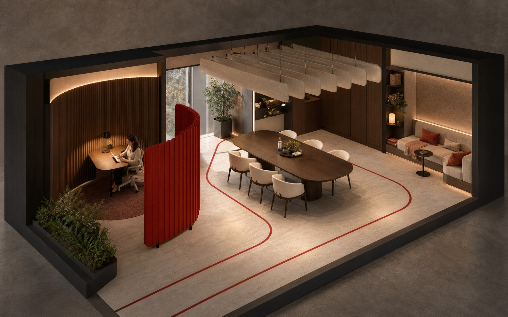

Current work / SoftwareFuture direction / WorkFuture direction / HealthFuture direction / HardwareFuture direction / EnvironmentsCurrent work / SoftwareFuture direction / WorkFuture direction / HealthFuture direction / HardwareFuture direction / Environments
01
The company
Most technology asks people to adapt to the machine.
We reverse the relationship.
Solivance is a behavioral intelligence company building computing
systems for individual context rather than population averages.
The method is consistent: sense what matters, form a revisable
hypothesis, then make one proportionate, reversible change. The
person remains in control.
Every Solivance product follows the same method: sense context, form a
revisable hypothesis, then make one proportionate, reversible change.
The person stays in control.
Beaverly is an adaptive habit system for adults with ADHD. It responds
to changing context and routines to make the next useful action easier
to begin. It is Solivance's first and only product in development.
Concept visual / Product in development
Adaptive habit formation
Many possible paths. One useful next action.
Future direction / Concept studies
Where the method could go next.
These are not current products or announced launches. They are
visual studies of how the same behavioral method could extend from
software into work, health, hardware, and physical environments.
Future direction / Work
Attention-aware work systems
We intend to explore coordination systems that could protect attention by adapting schedules and interface demands to a person's working rhythm.
Concept visualization / No current product
Concept study / Work systems
Future research direction
Illustrative scenario
What if a clear 100-minute window could be protected?
09:0010:0011:0012:0013:00
09:40clearest window11:20
Stand-up / 09:30
Review / 10:30
Flexible
Stand-up09:3011:40
Flexible
Review10:3013:10
Protected
Research brief100 minutes uninterrupted
Concept scenario: two flexible meetings fragment the window.
A possible response, not an existing service.
Future direction / Health
Behavioral support across a patient journey
We intend to investigate how behavioral intelligence could support clearer patient journeys and better adherence while clinical teams retain control.
Concept visualization / No current product
Concept study / Patient journeys
Future direction, not clinical judgment
Future research concept
What if context did not restart at every handoff?
A future system could carry relevant context across the systems a hospital already uses.
Patient
Context
Care team
Before arrival
What happens next?Preparation in plain language
01
Preparation
Clarification callsNeeds surfaced early
Check-in + care
Why repeat this?Relevant questions only
02
Intake
Repeated intakeContext carried forward
Discharge
What do I do first?First action made clear
03
Handoff
Plan re-explainedOne ordered handoff
Recovery
When should I get help?Prompted at action time
04
Follow-up
Every follow-up chasedExceptions surfaced
Context
PatientAnxiety · treatment adherenceHospitalReadmission · staff burdenPossible outcomes to study
Would complement existing hospital systems
SchedulingIntakeEHRDischargeFollow-up
Concept scenario: four workflows restart the patient's context.
A possible coordination concept. Clinical teams keep control.
Long-term direction / Hardware
Private sensing at the edge
Longer-term research may examine private, on-device sensing that could make context legible without exporting raw biological data. No device is in development.
Concept visualization / No device in development
Statesteady
Future concept / Study 04Could biological state become a useful, private signal?
On-device research concept private
01Sense02Interpret03Respond
Illustrative signalConceptRaw data would stay local
Long-term direction / Environments
Spaces that could respond
We intend to study how spaces might respond to sound, light, and movement while occupants remain in control. This is a research direction, not a product.
Concept visualization / No current product

Acoustics could shift
Task light could narrow
Traffic could reroute
Future study / Focus-supportive room
One person trying to focus. A room that could respond.
A concept for coordinating acoustics, lighting, and circulation around a stated need.
Future research direction.No environment product is currently being built.
04
Non-negotiables
Strong beliefs. Worn lightly.
Behavioral science can help people or exploit them. Our principles
make that line operational.
01
Dignity is a design constraint.
No dark patterns, no engineered dependency, and no business model that sells behavioral data.
02
Outcomes beat engagement.
Success means a measurably better life, not more sessions, more notifications, or more time on screen.
03
Science before certainty.
Claims follow evidence. When evidence is limited, uncertainty stays visible in the product and the story.
05
The horizon
From screen, to body, to world.
Now
Beaverly
Solivance's first and only software product, currently in development.
Future direction
Work & health systems
Potential research into attention, coordination, patient journeys, and adherence.
Long-term direction
Hardware & environments
Private on-device sensing and responsive spaces, pursued only when evidence supports them.
Work with Solivance
Have a human problem technology should fit better?
Talk to us about Beaverly, research partnerships, or a problem that
deserves a system built for the individual.